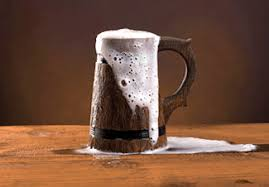
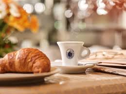
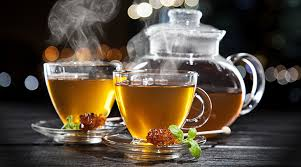

Pasty Side Dinks

Pasties were historically favored by laborers and miners. Usually these workers chose hearty or filling beverages or drinks as well. Many decided on ciders as they presented a crisp flavor to the savory pasty meal. Others chose a deep black tea. Still some workers decided on a good old fashion beer ale. Of course there were some fancier individuals who preferred a stout or medium bodied red wine. Whatever the brew, a nice complimentary beverage always washed down nicely after a Cornish pasty chew!
Pastry Side Dinks

The number one drink chosen to have with any pastry is COFFEE! Coffee us so drunken by pastry lovers that most pastry shops always have some type of coffee machine or barista. Certainly, if you visit a cafe, you will find pastries as well. Tea is another favorits. Whether it is black tea or tea with milk, you will aways find the sweet treats accompanied by this beverage. After coffee, tea is the second most requested choice! I'll have a cup of tea please!


Pasty and Pastry Shops:


Lawry's Pasty Shop Adress: 2381 US-41
Ishpeming, MI 49849
Phone number:906-485-5589